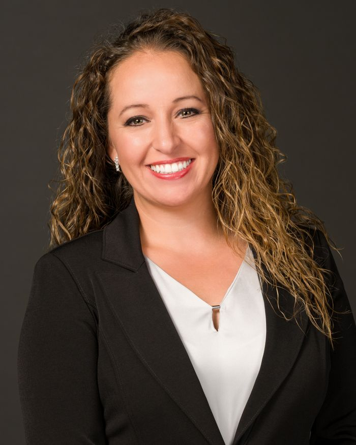

It's not only about us — it's about your financial future.
Shelander Financial Solutions is a team of financial services consultants committed to securing the financial future of individuals and families for years to come.
Founded with a vision to provide comprehensive financial solutions, we specialize in life insurance sales, estate planning, asset protection, and retirement planning.
What sets us apart is our unique approach. We don't just offer financial products and services — we build relationships. You become part of the Shelander family when you connect with us.
Request a Consultation
Tanya Shelander is the President/CEO & Co-Founder of Shelander Financial Solutions. With a full scholarship as a Division 1 Tennis Athlete, Tanya graduated and earned her Bachelor's degree from Lamar University in 2007.
As a focused senior management professional, Tanya excels in customer service, training, technology, and project management. Her proactive leadership and results-driven management style have consistently led to positive outcomes for clients.
Tanya holds a Texas Life Agent License, with certifications in AML Laws Texas, Texas Partnership Long Term Care, and Regulation Best Interest - Annuities. With over 10 years of training experience and 12+ years in customer service and management.
Tara Shelander is an accomplished legal professional with over nine years of experience providing legal support and counsel to corporate and individual clients. She is the Chief Legal Officer & Co-Founder of Shelander Financial Solutions.
Tara's expertise includes corporate governance, contract development and negotiations, document drafting/redlining, risk assessment and mitigation, and dispute resolution.
Tara holds a Juris Doctor degree from TMSL, where she graduated Magna Cum Laude. She also received a Master of Business Administration degree in Experiential Business and Entrepreneurship from Lamar University.
During her time at TMSL, Tara was awarded the Houston Bar Association Oil, Gas & Mineral Law Section Scholarship in recognition of her high grades in oil and gas studies.
Seasoned financial professionals who bring expertise to every client interaction — from life insurance to estate planning.
We value the trust you place in us. Expect honest, straightforward communication and complete transparency at every step.
Every client is unique. You'll receive personal attention and customized financial plans — never one-size-fits-all solutions.
At Shelander Financial Solutions, we're more than just your financial consultants. We're your partners, advocates, and guides on your journey to financial success.
Request a Consultation